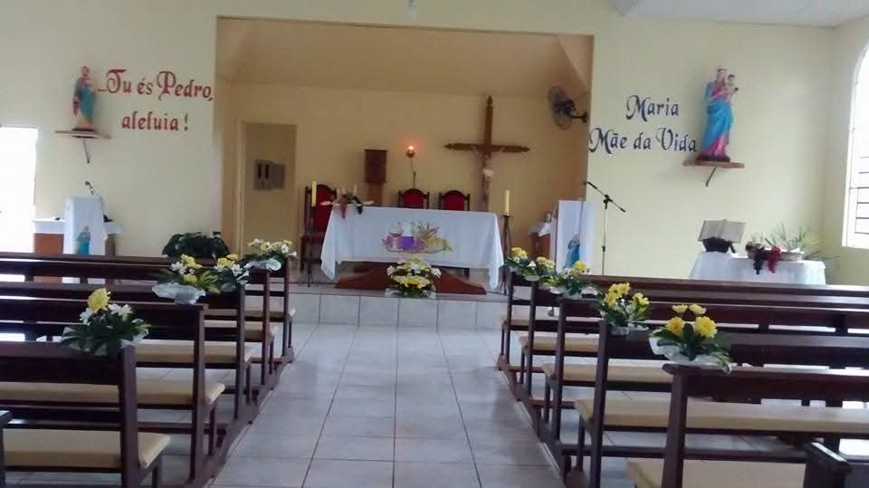
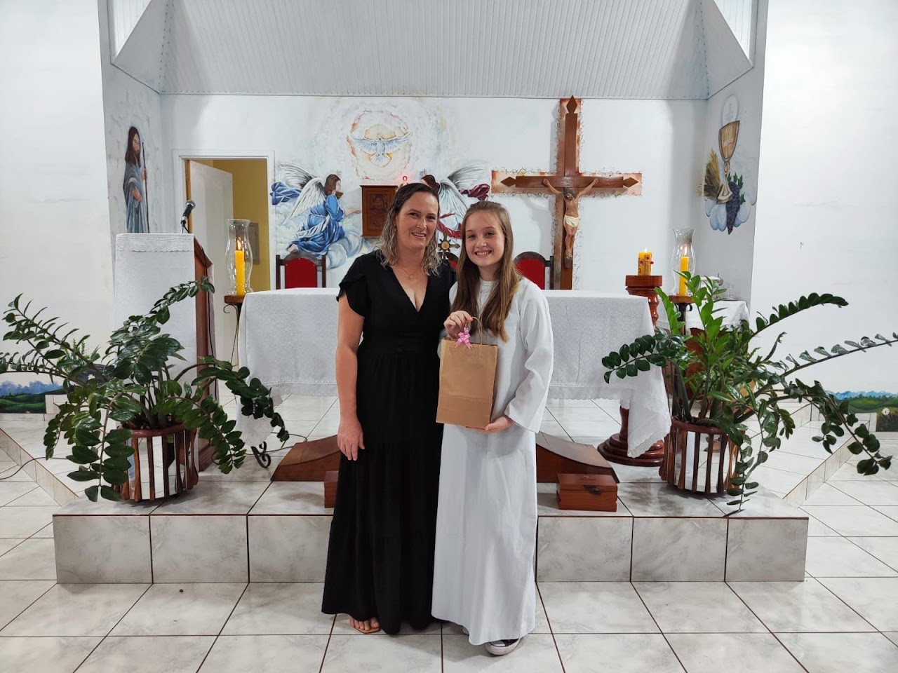

Missas e Cultos
Missa aos domingos às 9h
Culto aos sábados às 13h30

NOSSA CAPELA

CATEQUESE
Festa do Padroeiro
Fichas R$ 110,00
Dia 29/06 no pavilhão da Comunidade São Pedro
BEM VINDOS!
Essa página foi criada com o intuito de facilitar e apresentar nossa comunidade.
Tudo o que você precisa saber sobre nós está aqui... Dúvidas? Clique no botão abaixo.